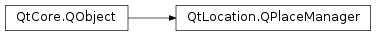

QPlaceManager¶
Synopsis¶
Functions¶
- def
category(categoryId) - def
childCategories([parentId=”“]) - def
childCategoryIds([parentId=”“]) - def
compatiblePlace(place) - def
getPlaceContent(request) - def
getPlaceDetails(placeId) - def
initializeCategories() - def
locales() - def
managerName() - def
managerVersion() - def
matchingPlaces(request) - def
parentCategoryId(categoryId) - def
removeCategory(categoryId) - def
removePlace(placeId) - def
saveCategory(category[, parentId=”“]) - def
savePlace(place) - def
search(query) - def
searchSuggestions(request) - def
setLocale(locale) - def
setLocales(locale)
Signals¶
- def
categoryAdded(category, parentId) - def
categoryRemoved(categoryId, parentId) - def
categoryUpdated(category, parentId) - def
dataChanged() - def
error(arg__1, error[, errorString=”“]) - def
finished(reply) - def
placeAdded(placeId) - def
placeRemoved(placeId) - def
placeUpdated(placeId)
Detailed Description¶
The
PySide2.QtLocation.QPlaceManagerclass provides the interface which allows clients to access places stored in a particular backend.The following table gives an overview of the functionality provided by the
PySide2.QtLocation.QPlaceManager
Functionality Description Searching for places Using set of parameters such as a search term and search area, relevant places can be returned to the user. Categories Places can be classified as belonging to different categories. The manager supports access to these categories. Search term suggestions Given a partially complete search term, a list of potential search terms can be given. Recommendations Given an existing place, a set of similar recommended places can be suggested to the user. Rich Content Rich content such as images, reviews etc can be retrieved in a paged fashion. Place or Category management Places and categories may be saved and removed. It is possible for notifications to be given when this happens. Localization Different locales may be specified to return place data in different languages.
Obtaining a QPlaceManager Instance¶
Creation of aPySide2.QtLocation.QPlaceManageris facilitated by thePySide2.QtLocation.QGeoServiceProvider. See Initializing a manager for an example on how to create a manager.
Asynchronous Interface¶
The
PySide2.QtLocation.QPlaceManagerclass provides an abstraction of the datastore which contains place information. The functions provided by thePySide2.QtLocation.QPlaceManagerand primarily asynchronous and follow a request-reply model. Typically a request is given to the manager, consisting of a various set of parameters and a reply object is created. The reply object has a signal to notify when the request is done, and once completed, the reply contains the results of the request, along with any errors that occurred, if any.An asynchronous request is generally handled as follows:
//1) Make an appropriate request QPlaceSearchRequest searchRequest; searchRequest.setSearchTerm("ice cream"); searchRequest.setSearchArea(QGeoCircle(QGeoCoordinate(12.34, 56.78))); //2) Use the manager to initiate a request and retrieve a reply object QPlaceSearchReply * searchReply = manager->search(searchRequest); //3) Connect the reply object to a slot which is invoked upon operation completion connect(searchReply, SIGNAL(finished()), this, SLOT(processSearchReply())); ... ... <Code snippet "places/requesthandler.h:Simple search handler" not found>See Common Operations for a list of examples demonstrating how the QPlaceManger is used.
Category Initialization¶
Sometime during startup of an application, the
PySide2.QtLocation.QPlaceManager.initializeCategories()function should be called to setup the categories. Initializing the categories enables the usage of the following functions:
QPlaceManager.childCategories()QPlaceManager.category()QPlaceManager.parentCategoryId()QPlaceManager.childCategoryIds();If the categories need to be refreshed or reloaded, the
PySide2.QtLocation.QPlaceManager.initializeCategories()function may be called again.
-
PySide2.QtLocation.QPlaceManager.category(categoryId)¶ Parameters: categoryId – unicode Return type: PySide2.QtLocation.QPlaceCategoryReturns the category corresponding to the given
categoryId.
-
PySide2.QtLocation.QPlaceManager.categoryAdded(category, parentId)¶ Parameters: - category –
PySide2.QtLocation.QPlaceCategory - parentId – unicode
- category –
-
PySide2.QtLocation.QPlaceManager.categoryRemoved(categoryId, parentId)¶ Parameters: - categoryId – unicode
- parentId – unicode
-
PySide2.QtLocation.QPlaceManager.categoryUpdated(category, parentId)¶ Parameters: - category –
PySide2.QtLocation.QPlaceCategory - parentId – unicode
- category –
-
PySide2.QtLocation.QPlaceManager.childCategories([parentId=""])¶ Parameters: parentId – unicode Return type: Returns a list of categories that are children of the category corresponding to
parentId. IfparentIdis empty, all the top level categories are returned.
-
PySide2.QtLocation.QPlaceManager.childCategoryIds([parentId=""])¶ Parameters: parentId – unicode Return type: list of strings Returns the child category identifiers of the category corresponding to
parentId. IfparentIdis empty then all top level category identifiers are returned.
-
PySide2.QtLocation.QPlaceManager.compatiblePlace(place)¶ Parameters: place – PySide2.QtLocation.QPlaceReturn type: PySide2.QtLocation.QPlaceReturns a pruned or modified version of the
originalplace which is suitable to be saved into this manager.Only place details that are supported by this manager is present in the modified version. Manager specific data such as the place id, is not copied over from the
original.
-
PySide2.QtLocation.QPlaceManager.dataChanged()¶
-
PySide2.QtLocation.QPlaceManager.error(arg__1, error[, errorString=""])¶ Parameters: - arg__1 –
PySide2.QtLocation.QPlaceReply - error –
PySide2.QtLocation.QPlaceReply.Error - errorString – unicode
- arg__1 –
-
PySide2.QtLocation.QPlaceManager.finished(reply)¶ Parameters: reply – PySide2.QtLocation.QPlaceReply
-
PySide2.QtLocation.QPlaceManager.getPlaceContent(request)¶ Parameters: request – PySide2.QtLocation.QPlaceContentRequestReturn type: PySide2.QtLocation.QPlaceContentReplyRetrieves content for a place according to the parameters specified in
request.See Fetching Rich Content for an example of usage.
-
PySide2.QtLocation.QPlaceManager.getPlaceDetails(placeId)¶ Parameters: placeId – unicode Return type: PySide2.QtLocation.QPlaceDetailsReplyRetrieves a details of place corresponding to the given
placeId.See Fetching Place Details for an example of usage.
-
PySide2.QtLocation.QPlaceManager.initializeCategories()¶ Return type: PySide2.QtLocation.QPlaceReplyInitializes the categories of the manager.
See Using Categories for an example of usage.
-
PySide2.QtLocation.QPlaceManager.locales()¶ Return type: Returns a list of preferred locales. The locales are used as a hint to the manager for what language place and category details should be returned in.
If the first specified locale cannot be accommodated, the manager falls back to the next and so forth. Some manager backends may not support a set of locales which are rigidly defined. An arbitrary example is that some places in France could have French and English localizations, while certain areas in America may only have the English localization available. In this example, the set of supported locales is context dependent on the search location.
If the manager cannot accommodate any of the preferred locales, the manager falls back to using a supported language that is backend specific.
Support for locales may vary from provider to provider. For those that do support it, by default, the global default locale is set as the manager’s only locale.
For managers that do not support locales, the locale list is always empty.
-
PySide2.QtLocation.QPlaceManager.managerName()¶ Return type: unicode Returns the name of the manager
-
PySide2.QtLocation.QPlaceManager.managerVersion()¶ Return type: PySide2.QtCore.intReturns the manager version.
-
PySide2.QtLocation.QPlaceManager.matchingPlaces(request)¶ Parameters: request – PySide2.QtLocation.QPlaceMatchRequestReturn type: PySide2.QtLocation.QPlaceMatchReplyReturns a reply which contains a list of places which correspond/match those specified in the
request. The places specified in the request come from a different manager.
-
PySide2.QtLocation.QPlaceManager.parentCategoryId(categoryId)¶ Parameters: categoryId – unicode Return type: unicode Returns the parent category identifier of the category corresponding to
categoryId.
-
PySide2.QtLocation.QPlaceManager.placeAdded(placeId)¶ Parameters: placeId – unicode
-
PySide2.QtLocation.QPlaceManager.placeRemoved(placeId)¶ Parameters: placeId – unicode
-
PySide2.QtLocation.QPlaceManager.placeUpdated(placeId)¶ Parameters: placeId – unicode
-
PySide2.QtLocation.QPlaceManager.removeCategory(categoryId)¶ Parameters: categoryId – unicode Return type: PySide2.QtLocation.QPlaceIdReplyRemoves the category corresponding to
categoryIdfrom the manager.See Removing a category for an example of usage.
-
PySide2.QtLocation.QPlaceManager.removePlace(placeId)¶ Parameters: placeId – unicode Return type: PySide2.QtLocation.QPlaceIdReplyRemoves the place corresponding to
placeIdfrom the manager.See Removing a place cpp for an example of usage.
-
PySide2.QtLocation.QPlaceManager.saveCategory(category[, parentId=""])¶ Parameters: - category –
PySide2.QtLocation.QPlaceCategory - parentId – unicode
Return type: Saves a
categorythat is a child of the category specified byparentId. An emptyparentIdmeanscategoryis saved as a top level category.See Saving a category for an example of usage.
- category –
-
PySide2.QtLocation.QPlaceManager.savePlace(place)¶ Parameters: place – PySide2.QtLocation.QPlaceReturn type: PySide2.QtLocation.QPlaceIdReplySaves a specified
place.See Saving a place cpp for an example of usage.
-
PySide2.QtLocation.QPlaceManager.search(query)¶ Parameters: query – PySide2.QtLocation.QPlaceSearchRequestReturn type: PySide2.QtLocation.QPlaceSearchReplySearches for places according to the parameters specified in
request.See Discovery/Search for an example of usage.
-
PySide2.QtLocation.QPlaceManager.searchSuggestions(request)¶ Parameters: request – PySide2.QtLocation.QPlaceSearchRequestReturn type: PySide2.QtLocation.QPlaceSearchSuggestionReplyRequests a set of search term suggestions according to the parameters specified in
request. Therequestcan hold the incomplete search term, along with other data such as a search area to narrow down relevant results.See Search Suggestions for an example of usage.
-
PySide2.QtLocation.QPlaceManager.setLocale(locale)¶ Parameters: locale – PySide2.QtCore.QLocaleConvenience function which sets the manager’s list of preferred locales to a single
locale.
-
PySide2.QtLocation.QPlaceManager.setLocales(locale)¶ Parameters: locale – Set the list of preferred
locales.
© 2018 The Qt Company Ltd. Documentation contributions included herein are the copyrights of their respective owners. The documentation provided herein is licensed under the terms of the GNU Free Documentation License version 1.3 as published by the Free Software Foundation. Qt and respective logos are trademarks of The Qt Company Ltd. in Finland and/or other countries worldwide. All other trademarks are property of their respective owners.